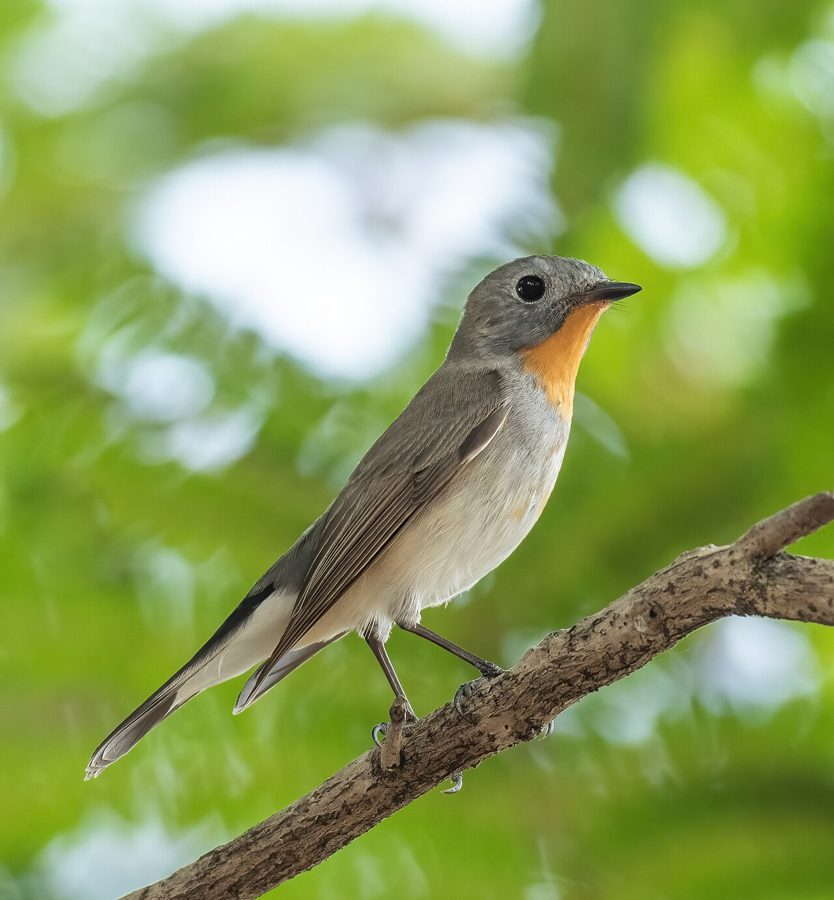

टैगा फ्लाईकैचरTaiga Flycatcher
Ficedula albicilla · Muscicapidae · BRD-0145

- Scientific nameवैज्ञानिक नाम
- Ficedula albicilla (Pallas, 1811)
- Familyकुल
- Muscicapidae
- Hindiहिंदी
- टैगा फ्लाईकैचर
- Local namesस्थानीय नाम
- taiga flycatcher, taiga flycacher, red-throated flycatcher, flycatcher
- Status hereयहाँ की स्थिति
- native
- Movementआवागमन
- Winter visitor
- IUCNIUCN
- LC
- Reviewसमीक्षा
- audited and independently read
When to look कब देखें
Winter visitorशीतकालीन प्रवासी. Expected mainly in September, October, November, December, January, February, March, April, May.मुख्यतः सितंबर, अक्टूबर, नवंबर, दिसंबर, जनवरी, फ़रवरी, मार्च, अप्रैल, मई में अपेक्षित।
Arrives in September–October from breeding grounds in central Asia and southern Siberia; departs by April–May. Ali & Ripley (1968) and Handbook of the Birds of the Western Palearctic document migration timing and winter distribution in India. All migrants and visitors →
Uses and possibilities उपयोग और संभावनाएँ
Drawn from the documented uses in the profile below, where each is labelled traditional, current or a research lead. All uses →
टैगा फ्लाईकैचर / Taiga Flycatcher
Ficedula albicilla (Pallas, 1811) — Muscicapidae
टैगा फ्लाईकैचर — यह छोटी सर्दियों की चिड़िया साइबेरिया और मध्य एशिया से सितंबर में पूर्वी उत्तर प्रदेश आती है और अप्रैल तक रहती है। नर की सफेद माथे की पट्टी और काली पीठ इसे तुरंत पहचान देती है। यह पेड़ों की शाखाओं से कीड़े पकड़ती है, हवा में छलांग लगाकर। यह बहुत सजग और तेज गतिविधि वाली चिड़िया है।
Quick Identification त्वरित पहचान
| Feature | Description |
|---|---|
| Size | Small flycatcher; 11–12 cm long |
| Male plumage | Black and white; white forehead and eye-ring; white on rump |
| Male back | Black or very dark grey |
| Female plumage | Browner; white eye-ring less distinct; grey-brown back |
| Underparts | White to buff-white |
| Wings and tail | Dark; white wing patches (male) |
| Behaviour | Alert; perches upright; sallies for insects |
| Call | Sharp tic or whit |
Field tip: In open forest and gardens in winter, look for a small pied flycatcher with a distinctive white forehead and eye-ring (male). It perches upright on prominent branches, repeatedly sallying out to catch insects in flight. The contrasting black-and-white plumage makes it conspicuous.
हिंदी — कैसे पहचानें:
छोटी चिड़िया; नर का रंग काला-सफेद।
माथे पर सफेद पट्टी।
पेड़ की शाखा पर सीधा बैठता है।
हवा में कीड़े पकड़ता है।
Morphology आकारिकी
Biometrics:
| Measurement | Range |
|---|---|
| Total length | 110–120 mm |
| Wing (flattened chord) | 54–60 mm |
| Tail | 39–46 mm |
| Bill | 9–11 mm |
| Tarsus | 15–18 mm |
| Weight | 9–13 g |
Size: 11–12 cm long; wingspan 17–19 cm. Weight 9–13 g. A small, compact flycatcher.
Plumage (male): Striking black and white. Crown and back jet black; forehead white, contrasting sharply. Narrow white eye-ring (loral stripe and ring around eye). Rump and upper tail-coverts white or buff-white. Underparts white with buff flanks. Wings black with white patches on primaries. Tail black with white on outer feathers.
Plumage (female): Duller than male. Crown and back grey-brown; forehead white but less contrasting. Eye-ring white but less distinct. Rump and underparts buff-white. Wings and tail brown-grey.
Bill: Small, pointed, dark; adapted for catching insects.
Legs and feet: Black or dark brown; slender.
Eyes: Dark, alert, small.
Juveniles: Similar to females; duller and browner.
Vocalisations. Call repertoire:
- Song: A short, simple warbling song.; not frequently heard in winter.
- Call: Sharp tic or whit, often given in alarm.
- Contact calls: Soft whistles between pair members.
हिंदी: नर की बोली सरल है। तेज़ "टिक" या "विट" अलर्ट कॉल। सर्दी में कम गाता है।
Behaviour & Ecology व्यवहार और पारिस्थितिकता
Flycatcher forager: Taiga Flycatcher is an active flycatcher, catching insects in flight. It feeds on:
- Small flies and gnats
- Small Hymenoptera
- Small moths
- Occasionally gleaning insects from foliage
Hunting technique: Perches upright on open branches, scanning for flying insects; sallies out, hovers briefly, and captures prey in air; often returns to same perch.
Social behaviour: Generally solitary during winter; territorial males defend feeding territories. Occasionally joins mixed feeding flocks with other small birds.
Habitat preference: Open forest, forest edge, gardens, parks, cultivation margins. Prefers areas with scattered trees and open canopy.
Foraging height: Primarily in canopy layer and mid-story; uses lower perches occasionally.
Predators: Small raptors (Eurasian Kestrel, Merlin), larger flycatchers, domestic cats may take individuals.
Movement: Quick and agile; frequently changes perches.
हिंदी: पेड़ की शाखा पर बैठकर कीड़े पकड़ता है। सर्दी में अकेली रहती है। अलग-अलग पेड़ों में घूमती है।
Life Cycle / Phenology जीवन चक्र
Winter visitor: Absent during breeding season (April–July); returns to eastern UP from September and remains through May.
Arrival and departure: First birds arrive in late August–September; numbers peak in December–February; departure begins in March–April, with most gone by late May.
Breeding (elsewhere): Breeds in central Asia and southern Siberia. Cup nest in tree cavities or holes.
Moult: Complete moult on breeding grounds before arrival; partial moult during winter.
Roosts: Roosting in trees and bushes; solitary roosters.
हिंदी: सितंबर में आता है, अप्रैल तक रहता है। साइबेरिया में घोंसला बनाता है। सर्दी में अकेली रहती है।
Host Plants or Prey आहार
| Food Type | Examples | Feeding Behaviour |
|---|---|---|
| Small flies | Flies, gnats, small Diptera | Catch in flight; sally-glean |
| Small Hymenoptera | Wasps, bees, ants | Aerial capture |
| Small moths | Tiny lepidopteran species | Hunt at dusk and early morning |
| Insect larvae | Small caterpillars | Glean from foliage occasionally |
हिंदी: मुख्यतः उड़ते हुए कीड़े पकड़ता है। छोटी मक्खियाँ और मधुमक्खियाँ इसका भोजन। कभी-कभी पत्तियों से भी कीड़े निकालता है।
Predators / Natural Enemies शत्रु
- Avian predators: Eurasian Kestrel, Merlin, Shrike, larger birds
- Mammalian predators: Domestic cat, weasel
- Parasites: Blood parasites, internal helminths
हिंदी: बाजें और बड़ी चिड़ियाँ शिकार करती हैं। बिल्ली भी खतरनाक है।
Agricultural / Human Relevance कृषि प्रासंगिकता
Protected species: All wild birds in India are protected under the Wildlife (Protection) Act 1972 (Schedule IV, amended 2022). Hunting is prohibited.
Pest control: Consumes large numbers of flying insects, providing natural pest control in gardens, parks, and cultivated areas.
Cultural relevance: Known from ornithological records of the Indian subcontinent. The pied coloration makes it distinctive in classical bird guides.
Scientific value: Migratory patterns important for understanding Central Asian flyway connectivity; population monitoring for habitat quality assessment.
हिंदी: वन्यजीव संरक्षण अधिनियम 1972 के अनुसूची IV के अंतर्गत पूरी तरह संरक्षित है। इसका शिकार निषिद्ध है।
Expected Locally स्थानीय रूप से अपेक्षित
Not a field record. Written from published accounts for eastern Uttar Pradesh. No confirmed local sighting yet — if you have seen it, that is what the atlas needs.
अभी तक स्थानीय पुष्टि नहीं। यह विवरण प्रकाशित स्रोतों से है, किसी अवलोकन से नहीं।
Winter range: Expected in eastern Uttar Pradesh from September to May, particularly in open forest areas and gardens of Basti and Ayodhya districts. Published handbooks document this species as a regular winter visitor across northern India.
Habitat preference: Open deciduous forest, forest edge, gardens, parks, cultivation margins with scattered trees.
Peak occurrence: January–February, when populations from Central Asian breeding grounds are settled.
Nearest published record: Handbook of the Birds of India and the Western Palearctic document this species as a winter visitor throughout the Indo-Gangetic Plain. Its distinctive appearance makes it recognizable where it occurs.
What a first record would be: A dated photograph showing the bird clearly in a specific location (with GPS coordinates and date), such as perched on a branch or sallying for insects, submitted through the About page.
हिंदी: यह पक्षी स्थानीय रूप से अपेक्षित है, न कि देखे गए बतौर प्रेक्षण। सितंबर से अप्रैल तक जंगल के किनारों और बागों में देखे जाने चाहिए। पहला रिकॉर्ड के लिए स्पष्ट फोटोग्राफ और तारीख चाहिए।
Distribution वितरण
Global range: Breeding range in central Asia and southern Siberia, from the Urals east to Kamchatka. Winters throughout the Indian subcontinent and Southeast Asia.
In India: Distributed across the Indian subcontinent as a winter visitor (September–May). Occurs from the Himalayas south to the Deccan.
In Uttar Pradesh: Widespread in winter in suitable habitat, particularly in forest edges and gardens of the plains.
In Basti district / eastern UP: Regular winter visitor in open forest and gardens; expected on range grounds rather than confirmed in local surveys.
Research Questions शोध प्रश्न
- What are the exact breeding grounds and wintering grounds of Taiga Flycatcher populations in eastern UP? Do different populations winter in different parts?
- How does insect prey availability influence Taiga Flycatcher distribution and abundance during winter?
- What is the relationship between foraging height and prey type captured by Taiga Flycatcher in different habitats?
- क्या पेड़ों और झाड़ों की संख्या में बदलाव इस फ्लाईकैचर की संख्या को प्रभावित करता है?
- How do Taiga Flycatchers defend territories during winter and what role does space constraint play? (A child can observe individual birds and map their movements over the winter.)
- क्या इस चिड़िया के आने-जाने के समय में जलवायु परिवर्तन का असर दिख रहा है?
Similar Species मिलती-जुलती प्रजातियाँ
| Species | Key Difference | Hindi | Field Rule |
|---|---|---|---|
| Spotted Flycatcher (Muscicapa striata) | Brown and speckled (not pied); no white forehead; streaked breast | धब्बेदार फ्लाईकैचर | Spotted Flycatcher is grey-brown with streaks; Taiga is black-and-white pied. |
| Red-breasted Flycatcher (Ficedula parva) | Near-identical winter visitor, scarcer here; male has an orange throat and breast; uppertail coverts brown, not black; call a drier rattle | रेड-ब्रेस्टेड फ्लाईकैचर | Black uppertail coverts and a restricted orange throat mean Taiga; brown uppertail coverts and orange spreading onto the breast mean Red-breasted |
| White-throated Flycatcher (Ficedula monileger) | White throat patch; no white forehead; different pattern | सफेद गले वाली फ्लाईकैचर | White-throated lacks white forehead and has different throat pattern. |
Field rule: Taiga Flycatcher is a pied (black-and-white) flycatcher with a white forehead and eye-ring, perching upright. If the bird is brown and speckled, it is a Spotted Flycatcher. If the throat is white but without white forehead, it is a different species.
Taxonomy & Classification वर्गीकरण
Original description. The species was described by Peter Simon Pallas in 1811 as Muscicapa albicilla, based on specimens from Central Asia.
Subspecies. The nominate subspecies F. a. albicilla winters in the Indian subcontinent and is the form found in eastern UP.
Family and order placement. Order Passeriformes; family Muscicapidae (flycatchers). The genus Ficedula contains the pied flycatchers and related species.
Phylogenetic notes. Molecular work has shown Ficedula to be closely related to other Old World flycatchers within Muscicapidae.
IUCN status rationale. Assessed as Least Concern (LC) globally. Populations are stable and widely distributed. The species is adaptable to human-modified habitats. In India, it is protected under the Wildlife (Protection) Act 1972 (Schedule IV).
हिंदी: यह यूरोप, एशिया, और अफ्रीका में पाया जाता है। भारत में सर्दियों में आता है। पूरी तरह सुरक्षित है।
Photo Gallery फोटो गैलरी
No photos yet — add field photos to media/species/taiga_flycatcher/ and run node scripts/sync_photos.js.
Wanted photos:
- Male in black-and-white plumage
- Female showing brown tones
- Bird sallying for insect in flight
- Perched on exposed branch
- Head close-up showing white forehead and eye-ring
References संदर्भ
- Pallas, P. S. (1811). Zoographia Rosso-Asiatica. Vol. 1, p. 454.
- Ali, S. & Ripley, S. D. (1968). Handbook of the Birds of India and Pakistan. Vol. 5 (Flycatchers to Drongos). Oxford University Press, Delhi. Pp. 166–168.
- Cramp, S. & Perrins, C. M. (1993). Handbook of the Birds of Europe, the Middle East and North Africa: The Birds of the Western Palearctic. Vol. 8 (Crows to Finches). Oxford University Press. Pp. 284–288.
- Grimmett, R., Inskipp, C. & Inskipp, T. (2011). Birds of the Indian Subcontinent (2nd edn). Oxford University Press, Delhi. P. 316.
- GBIF Occurrence Data — Ficedula albicilla, India.
- IUCN Red List (2023). Ficedula albicilla — BirdLife International assessment. IUCN, Cambridge. Status: Least Concern.
Source file: species/fauna/birds/taiga_flycatcher.md